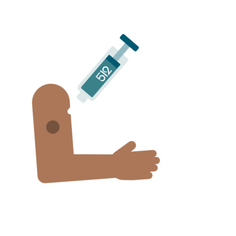
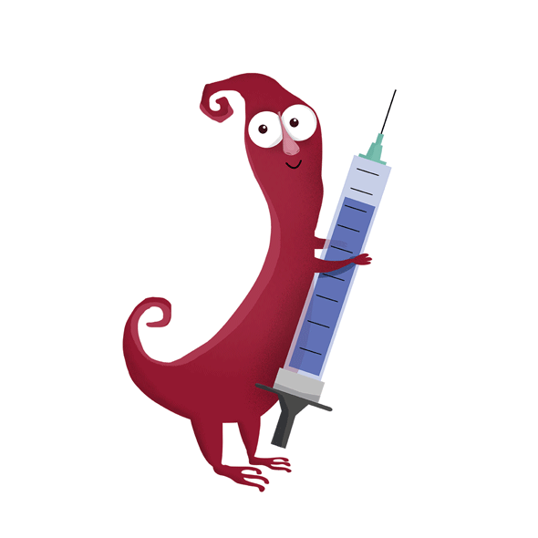
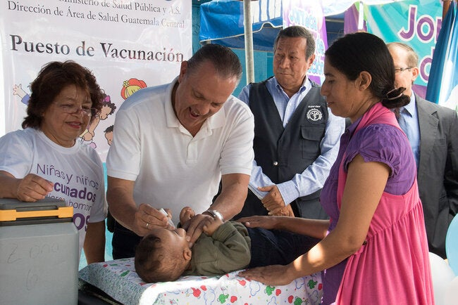

CENTRO DE SALUD "DAVID QUISBERTT"
MEDICINA GENERAL
El centro de salud “DAVID QUISBERTT ” tiene una amplia variedad de servicios al cliente , con una atención inmediata y segura ,mostrando nuestras instalaciones para su comodidad ,para que vea la clinica y demas .
También contamos con equipos de seguridad efectivos y eficaces con un seguro médico , siendo así esta clínica gratis y fácil de llegar contando con vías cercanas y equipos de movilidad instantánea, además contamos con una farmacia al lado de la clínica lo cual permite que sea más cercana y evitando la búsqueda de farmacias.
Contando así con especialistas con capacitación muy avanzada les brindamos tecnología de punta para su salud y comodidad, contando así con un equipo muy avanzado les deseamos que puedan aproximarse virtualmente a la plataforma y ver que tecnología tenemos y así sale de dudas en la teconologia de la clinica >encontrara todo .
PEDIATRIA
¿Que es la pediatría ?
Parte de la medicina que se ocupa del estudio del crecimiento y el desarrollo de los niños hasta la adolescencia, así como del tratamiento de sus enfermedades.Y en nuestra clínica te ofrecemos las mejores atenciones con especialistas para su niño psicológicamente y físicamente con los mejores tratamientos y equipamiento para la comodidad de los niños y para la tranquilidad de los padres dejando así en buenas manos
La pediatría no es fácil de dominar por lo que mucho de los estudiantes fueron a especializarse en otros países así que tenemos muchos especialistas por lo que los niños son bien tratados con una amplia seguridad de cámaras y seguridad de 1er calidad y vigilancia de primera calidad por lo que no hay necesidad de preocuparse el trato hacia los niños con los doctores son muy buenas y atentos cosa que pocas clínicas la tienen por eso abrimos esta clínica que este a disponibilidad de cada uno de nosotros los bolivianos con pocos recurso .
Tenemos la seguridad de que nuestros especialistas puedan realizar y así nosotros ofreceremos a nuestra clientela para la comodidad de los niños los siguientes servicios:
- Médicos especializados en el cuidado de los bebes y los niños.
- Atención de partos gemelares o múltiples e incluso aquellos que nacen con fórceps, mediante cesaría p por parto vaginal .
- Pediatras especializados en el cuidado del recién nacido con problemas.
- Se encarga de la unidad de cuidados intensivos de neonatos.
ATENCION DE VACUNAS: PENTAVALENTE, INFLUENZA, FIEBREAMARRILLA, COVID-19

La clínica “DAVID QUISBERTT ” también lanza una gran campaña de vacunas para las enfermedades muy cotidianas y lo que hoyen día nos a inundado de muertes de muchas personas , si , es el covid-19 la clínica laza la campaña por el motivo del covid-19 , claramente estaremos con especialistas muy capacitados no dejando en lado la labor de nuestros doctores, y así atendiendo a los pacientes .
Así que no te puedes perder esta oportunidad las enfermedades a tratar serán:
-Pentavalente
-Influenza
-Fiebre
-Fiebre amarilla
-Covid-19
Y mas …

TU ME CUIDAS YO TE CUIDO, NOS CUIDAMOS :)
CAMPAÑAS DE PREVENCION DE ENFERMEDADES
Las campañas que se realizaran y que están llevadas a cabo por doctores especialistas fue inspirada a que se eviten contagios de personas trabajadores , claro de personas que salen a calles a vender o están con sus negocios por que esas personas son las que se arriesgan mas y por ello se lazo esta campaña en contra del virus y demás para afrontar toda enfermedad y mas si se trata de covid-19.
La misma será tratada fuera de la clínica para todos y es libre y gratuita para gente promedio como nosotros los trabajadores ambulantes o personas con negocios que se sacrifican para dar el pan de cada día .
